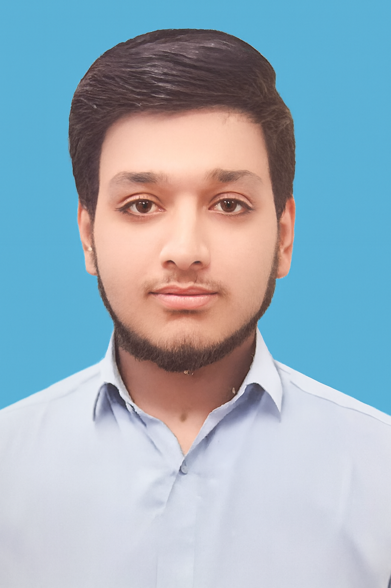

About Me
Introduction
Hello! My name is Muhammad Imran, and I’m a passionate student currently learning Web Development and computer technologies. From a very young age, I was fascinated by how websites work and how creative people turn simple code into something beautiful and functional.
I enjoy working with HTML, CSS, and exploring the basics of JavaScript. My goal is to become a full-stack developer who can build everything from simple landing pages to complex web applications.
In addition to coding, I have a deep interest in graphic design and UI/UX concepts. I believe that great design isn’t just about colors or shapes — it’s about making the user’s journey enjoyable and effortless.
Currently, I’m focusing on improving my fundamentals. I try to learn something new every day, whether it's a small HTML tag, a new CSS trick, or understanding how databases work. I strongly believe that consistency is the key to growth in the tech world.
When I’m not coding, I like reading about technology trends, exploring creative ideas, and helping my friends understand programming basics. Teaching others helps me reinforce my own understanding.
Besides technology, I have a great passion for reading books, especially Islamic
history.
I love learning about the lives of great scholars, the golden age of Muslim civilization, and the
wisdom of early Islamic thinkers.
Books like Seerat-un-Nabi (ﷺ)
, Tareekh-e-Tabari
, and Hayatus Sahaba
inspire me
deeply and remind me of the moral and spiritual strength of our past.
Reading such works gives me perspective on life, discipline, and leadership. I believe every developer and learner should also read history to understand how knowledge and ethics go hand in hand.
I live by the quote “Learning never exhausts the mind.”
− Leonardo da Vinci — a constant reminder that knowledge is endless and curiosity is
the fuel that keeps us going.
My long-term dream is to work on real-world projects that can make a difference — maybe build educational platforms or creative portfolio tools for new learners.
Besides tech and reading, I enjoy photography, music, and spending time with people who inspire positivity and creativity.
In short: I’m a dreamer, a learner, and a builder — always curious, always growing, and always ready to create something meaningful.
Education
- BS Computer Science – XYZ University (2021–2025)
- Intermediate in Science – ABC College
- Matriculation – City High School